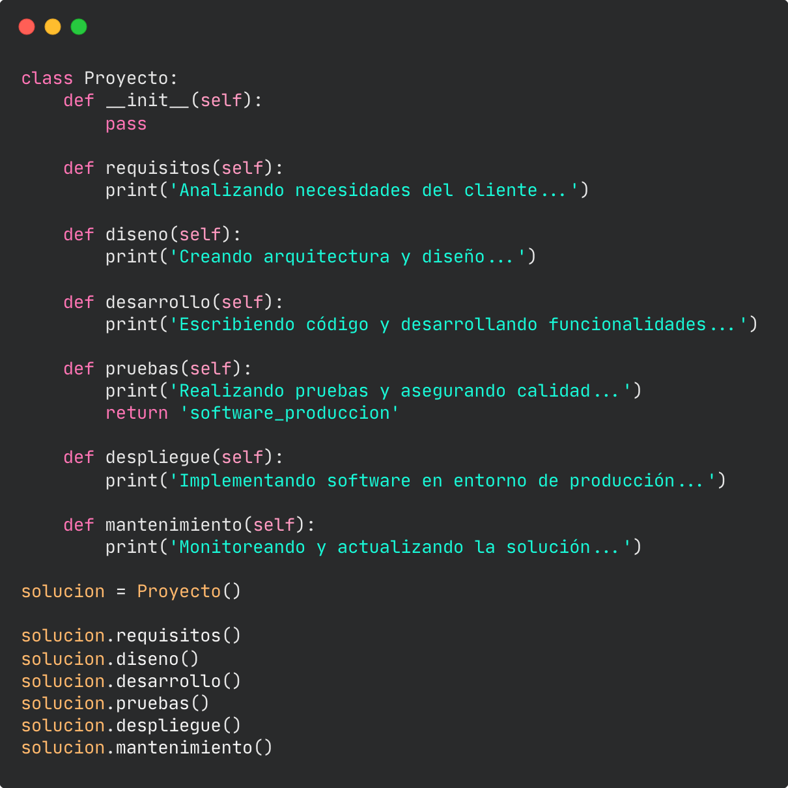

Lo visualizas,
lo creamos
Desarrollamos software a medida que responda a los desafíos únicos de tu organización.
Agenda una reunión
Para transformar los procesos, datos y modelos de tu negocio en una solución de
software efectiva, no necesitas un proveedor que solo piense en cumplir con los requisitos técnicos,
sino un socio que se sumerja en la visión de tu organización para traducirla a un producto
digital.
Nos comprometemos a entender a fondo los desafíos de tu empresa y a traducirlos en un
producto digital de alta calidad, que no solo funcione como se espera que lo haga, sino que destaque en
confiabilidad y atención al detalle, eliminando fricciones de los usuarios, anticipando necesidades de
negocio, y que pueda evolucionar junto a tu organización.
Creemos que un compromiso profundo con
tu visión es clave para generar verdadero valor.
En Auslav, entendemos que un buen software no se trata solo de construir pantallas bonitas o formularios eficientes. Es crucial comprender a fondo el comportamiento de quienes lo usan, anticipar sus necesidades, y diseñar interfaces que funcionen bien, sin comportamientos inesperados, que ofrezcan una experiencia de usuario (UX) intuitiva y sólida. Analizamos cada proyecto más allá de lo visual, profundizando en los flujos de interacción y asegurando que cada componente esté alineado con los objetivos del negocio.
Construimos software convencidos que este debe evolucionar con el crecimiento del negocio. Por eso establecemos fundamentos robustos en su construcción y paradigmas modernos de programación para que, una vez finalizada y puesta en marcha la solución, ya está lista para recibir nuevas implementaciones y escalar para responder nuevas necesidades, mercados y tecnologías.
Nuestro enfoque pone a las personas en el centro del desarrollo. Cuando el software es problemático,
poco intuitivo o difícil de entender, los objetivos que se persiguen con este se resienten.
Por eso, además de cumplir con los requerimientos técnicos del negocio, nos enfocamos en entender
los dolores, necesidades y comportamientos de los usuarios finales. Nuestro objetivo es crear
soluciones que no solo sean funcionales, sino que también mejoren la vida de quienes las usan,
resolviendo problemas reales de manera intuitiva y eficiente.
Desarrollar con Auslav significa más que tener un software funcional; significa empoderar a tu negocio con inteligencia. Creamos soluciones que integran análisis de datos avanzados y reportes en tiempo real, permitiendo a tu organización tomar decisiones informadas, optimizar procesos y anticipar oportunidades de crecimiento.
Trabajamos con los paradigmas más avanzados de la industria, utilizando cloud computing, desarrollo ágil y las tecnologías y lenguajes de programación modernos. Esto nos permite entregar soluciones escalables, seguras y altamente eficientes, alineadas con las exigencias del mercado actual y preparadas para el futuro.
Entendemos que el lanzamiento es solo el comienzo. Ofrecemos un soporte continuo que garantiza que tu solución se mantenga actualizada, segura y alineada con las necesidades cambiantes de tu negocio. Además, estamos siempre listos para implementar mejoras y nuevas funcionalidades, asegurando que tu software evolucione al ritmo de tu empresa
En Auslav, hemos recorrido un camino que nos ha llevado mucho más allá de escribir
buen código. Nuestra experiencia abarca el desarrollo de productos digitales en diversos sectores,
donde hemos aprendido a valorar tanto los desafíos de los negocios como las necesidades de las
personas que los utilizan. Consideramos cada proyecto desde una perspectiva holística, integrando el
diseño, la usabilidad y el factor humano en cada solución que creamos.
Hemos sido parte de
equipos ágiles que han desarrollado aplicaciones para industrias como la de montajes y el sector
financiero chileno. También hemos contribuido al crecimiento de startups nacionales y extranjeras en
áreas como Internet of Things (IoT), educación y bienes raíces. Nuestro portafolio incluye desde
soluciones de inteligencia de negocios hasta plataformas que integran comunidades de miles de
personas en experiencias de livestream y eventos masivos.
Hemos apoyado a miles de usuarios,
comprendiendo sus fricciones y desafíos con las plataformas que utilizan. Esta experiencia nos
posiciona como un equipo con una comprensión profunda de lo que realmente se necesita para que un
producto digital no solo funcione, sino que sobresalga.

John Johnson
Convierte esa idea en realidad e impulsa tus procesos al siguiente nivel